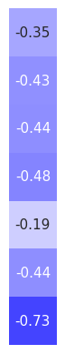

iEEG Data
Contents
iEEG Data¶
This notebook analyses a large dataset of iEEG data, from the MNI database.
Dataset Details¶
This analysis uses the openly available MNI dataset.
from pathlib import Path
import numpy as np
import matplotlib.pyplot as plt
from fooof import FOOOF, FOOOFGroup
from fooof.plts import plot_spectra
from fooof.analysis import get_band_peak_fg
from neurodsp.utils import create_times
from neurodsp.aperiodic import compute_irasa
from neurodsp.spectral import compute_spectrum, trim_spectrum
from neurodsp.plts import plot_time_series, plot_power_spectra
/var/folders/59/8y2d5r257c77vzymnqs47x080000gn/T/ipykernel_21809/3327055839.py:6: DeprecationWarning:
The `fooof` package is being deprecated and replaced by the `specparam` (spectral parameterization) package.
This version of `fooof` (1.1) is fully functional, but will not be further updated.
New projects are recommended to update to using `specparam` (see Changelog for details).
from fooof import FOOOF, FOOOFGroup
# Import custom code
import sys
sys.path.append(str(Path('..').resolve()))
from apm.io import APMDB, get_files, load_pickle
from apm.io.data import load_ieeg_all
from apm.analysis import (compute_all_corrs, unpack_corrs,
compute_corrs_to_feature, compute_diffs_to_feature)
from apm.plts import plot_dots, plot_corr_matrix
from apm.plts.multi import plot_results_all
from apm.plts.utils import make_axes, figsaver
from apm.plts.settings import LABELS
from apm.utils import format_corr
# Set plot style
import seaborn as sns
sns.set_context('talk')
# Import dataset settings from script
sys.path.append(str(Path('..').resolve() / 'scripts'))
from scripts.analyze_ieeg import (DATA_FOLDER, NON_CORTICAL, FS, MAX_TIME,
FIT_RANGE_SHORT, FIT_RANGE_LONG)
from scripts.settings import SPECPARAM_SETTINGS, SPECPARAM_SETTINGS_KNEE
Set Up Paths¶
# Define load path
db = APMDB()
LOADPATH = db.data_path / 'ieeg'
# Check the set of results files available for this dataset
get_files(LOADPATH)
['ieeg_all_corrs.p',
'ieeg_results.p',
'ieeg_specparam.json',
'ieeg_specparam_long.json',
'ieeg_specparam_short.json']
Settings¶
# Define band range for peaks
peak_range = [2, 35]
# Add plot kwargs
dot_kwargs = {
's' : 16,
'alpha' : 0.4,
}
# Settings for saving figures
SAVE_FIG = True
FIGPATH = db.figs_path / '53_ieeg_data'
# Create helper function to manage figsaver settings
fsaver = figsaver(SAVE_FIG, FIGPATH)
Load Data¶
# Get the list of available files
files = get_files(DATA_FOLDER)
# Check the number of files
n_files = len(files)
print('Number of files: {}'.format(n_files))
Number of files: 38
# Load all data files
all_data, all_chs = load_ieeg_all(files, DATA_FOLDER, MAX_TIME, NON_CORTICAL, return_channels=True)
# Create times definition
times = create_times(MAX_TIME, FS)
# Check data size
n_chs, n_times = all_data.shape
print('Number of channels: {}'.format(n_chs))
Number of channels: 1479
Data Checks¶
# Set example channel index
chi = 550
# Plot an example time series
plot_time_series(times, all_data[chi, :], lw=1., figsize=(12, 1))
plt.gca().axis('off');

# Plot a zoomed in segment of a time series
plot_time_series(times, all_data[chi, :], xlim=[5, 12], lw=1., figsize=(12, 1))
plt.gca().axis('off');
if SAVE_FIG: plt.savefig(FIGPATH / ('ieeg_timeseries.pdf'))
# Compute a power spectrum of an example
freqs, powers = compute_spectrum(all_data[chi, :], FS, nperseg=2*FS, noverlap=FS)
# Trim spectrum to fit range
freqs, powers = trim_spectrum(freqs, powers, FIT_RANGE_LONG)
# Plot the power spectrum
plot_power_spectra(freqs, powers, figsize=(4.5, 4), **fsaver('ieeg_psd'))
Check Spectral Fits - Short Fit Range¶
# Load specparam measures
fg_short = FOOOFGroup()
fg_short.load('ieeg_specparam_short', LOADPATH)
# Check overall group results
fg_short.print_results()
fg_short.plot()
==================================================================================================
FOOOF - GROUP RESULTS
Number of power spectra in the Group: 1479
The model was run on the frequency range 3 - 40 Hz
Frequency Resolution is 0.50 Hz
Power spectra were fit without a knee.
Aperiodic Fit Values:
Exponents - Min: 0.162, Max: 3.640, Mean: 1.599
In total 8033 peaks were extracted from the group
Goodness of fit metrics:
R2s - Min: 0.679, Max: 0.997, Mean: 0.973
Errors - Min: 0.032, Max: 0.202, Mean: 0.064
==================================================================================================
Example Spectral Model - Short Fit Range¶
chi = 550
# Compute a power spectrum of an example signal, and trim to fit range
freqs, powers = compute_spectrum(all_data[chi, :], FS, nperseg=2*FS, noverlap=FS)
freqs, powers = trim_spectrum(freqs, powers, FIT_RANGE_SHORT)
# Fit a spectral model to example data
fm = FOOOF(**SPECPARAM_SETTINGS)
fm.fit(freqs, powers, FIT_RANGE_SHORT)
# Plot the specparam spectral model
fm.plot(plt_log=True, figsize=(4.5, 4), yticklabels=[],
**fsaver('ieeg_spectral_model_short'))
IRASA¶
# Compute the IRASA decomposition
freqs_ir, psd_ap, psd_pe = compute_irasa(all_data[chi, :], FS, FIT_RANGE_SHORT)
# Plot the IRASA data & aperiodic component
plot_spectra([freqs, freqs_ir], [powers, psd_ap], log_freqs=True, figsize=(4.5, 4),
log_powers=True, colors=['black', 'blue'], yticklabels=[],
labels=['Original Spectrum', 'Aperiodic Component'],
**fsaver('ieeg_irasa_model_short'))
Check Spectral Fits - Long Fit Range¶
# Load specparam measures
fg_long = FOOOFGroup()
fg_long.load('ieeg_specparam_long', LOADPATH)
# Check overall group results
fg_long.print_results()
fg_long.plot()
==================================================================================================
FOOOF - GROUP RESULTS
Number of power spectra in the Group: 1479
The model was run on the frequency range 1 - 60 Hz
Frequency Resolution is 0.50 Hz
Power spectra were fit with a knee.
Aperiodic Fit Values:
Knees - Min: -0.93, Max: 1131368032417823.25, Mean: 791471350711.19
Exponents - Min: 0.511, Max: 9.205, Mean: 3.741
In total 13524 peaks were extracted from the group
Goodness of fit metrics:
R2s - Min: 0.803, Max: 0.998, Mean: 0.984
Errors - Min: 0.036, Max: 0.219, Mean: 0.066
==================================================================================================

Example Spectral Model - Long Fit Range¶
chi = 813
# Compute a power spectrum of an example signal, and trim to fit rante
freqs, powers = compute_spectrum(all_data[chi, :], FS, nperseg=2*FS, noverlap=FS)
freqs, powers = trim_spectrum(freqs, powers, FIT_RANGE_LONG)
# Fit a spectral model to example data
fm = FOOOF(**SPECPARAM_SETTINGS_KNEE)
fm.fit(freqs, powers, FIT_RANGE_LONG)
/Users/tom/opt/anaconda3/envs/apm/lib/python3.9/site-packages/scipy/optimize/_lsq/trf.py:234: RuntimeWarning: divide by zero encountered in divide
Delta = norm(x0 * scale_inv / v**0.5)
/Users/tom/opt/anaconda3/envs/apm/lib/python3.9/site-packages/scipy/optimize/_lsq/trf.py:363: RuntimeWarning: invalid value encountered in scalar divide
alpha *= Delta / Delta_new
/Users/tom/opt/anaconda3/envs/apm/lib/python3.9/site-packages/scipy/optimize/_lsq/common.py:49: RuntimeWarning: invalid value encountered in scalar divide
t2 = c / q
/Users/tom/opt/anaconda3/envs/apm/lib/python3.9/site-packages/scipy/optimize/_lsq/trf.py:363: RuntimeWarning: invalid value encountered in scalar multiply
alpha *= Delta / Delta_new
/Users/tom/opt/anaconda3/envs/apm/lib/python3.9/site-packages/scipy/optimize/_lsq/common.py:398: RuntimeWarning: invalid value encountered in cast
return min_step, np.equal(steps, min_step) * np.sign(s).astype(int)
# Plot the specparam spectral model
fm.plot(plt_log=True, figsize=(4.5, 4), yticklabels=[],
**fsaver('ieeg_spectral_model_long'))
IRASA¶
# Compute the IRASA decomposition
freqs_ir, psd_ap, psd_pe = compute_irasa(all_data[chi, :], FS, FIT_RANGE_LONG)
# Plot the IRASA data & aperiodic component
plot_spectra([freqs, freqs_ir], [powers, psd_ap], log_freqs=True, figsize=(4.5, 4),
log_powers=True, colors=['black', 'blue'], yticklabels=[],
labels=['Original Spectrum', 'Aperiodic Component'],
**fsaver('ieeg_irasa_model_long'))
Load Results¶
# Load precomputed aperiodic measure results
results = load_pickle('ieeg_results', LOADPATH)
# Check size of computed results [n_chs]
results['dfa'].shape
(1479,)
Check Measures & Labels¶
# Check list of computed measures
print(list(results.keys()))
['autocorr_decay_time', 'dfa', 'higuchi_fd', 'hjorth_complexity', 'lempelziv', 'sample_entropy', 'perm_entropy', 'specparam_short', 'specparam_long', 'specparam_knee', 'specparam_knee_freq', 'irasa_short', 'irasa_long', 'irasa_knee', 'irasa_knee_freq']
# Collect list of exponent & timeseries measure labels
exp_measures = ['specparam_short', 'specparam_long', 'irasa_short', 'irasa_long']
knee_measures = ['specparam_knee', 'specparam_knee_freq', 'irasa_knee', 'irasa_knee_freq']
ts_measures = list(results.keys())
[ts_measures.remove(meas) for meas in exp_measures + knee_measures];
# Collect labels for time series measures
ts_labels = [LABELS[meas] for meas in ts_measures]
Compute Correlations¶
# Load precomputed aperiodic measure results
all_corrs = load_pickle('ieeg_all_corrs', LOADPATH)
# # Compute correlations across all pairs of methods
# all_corrs = compute_all_corrs(results)
Compare exponent measures - short¶
# Check exponent data ranges
print('SP: {:1.2f}-{:1.2f}'.format(np.min(results['specparam_short']),
np.max(results['specparam_short'])))
print('IR: {:1.2f}-{:1.2f}'.format(np.min(results['irasa_short']),
np.max(results['irasa_short'])))
SP: 0.16-3.64
IR: 0.13-4.03
# Compare aperiodic exponent from specparam & IRASA
plot_dots(results['specparam_short'], results['irasa_short'], alpha=0.25, tposition='tl',
xlim=[0, 4.5], ylim=[0, 4.5], expected=[0, 4.5], s=10, figsize=(4.5, 4),
xlabel='Aperiodic Exponent (SP)', ylabel='Aperiodic Exponent (IR)',
**fsaver('ieeg_exp_exp_short'))

# Check correlation between exponent estimates
print(' SP-EXP & IR-EXP: ', format_corr(*all_corrs['specparam_short']['irasa_short']))
SP-EXP & IR-EXP: r=+0.956 CI[+0.949, +0.962], p=0.000
# Compute average difference between exponent estimates
exp_diffs_short = np.abs(results['specparam_short'] - results['irasa_short'])
# Plot the distribution of differences between exponent measures
plot_dots(np.random.randn(len(exp_diffs_short)) * 0.15, exp_diffs_short,
add_corr=False, figsize=(2.5, 4), xticks=[], xlim=[-1, 1],
ylim=[-0.02, 1.01], ylabel='Exponent Difference', alpha=0.25, s=8,
**fsaver('ieeg_exp_diffs'))
# Check median and range of exponent differences
print('Median exp diff: \t{:1.2f}'.format(np.median(exp_diffs_short)))
print('Min/Max: \t\t{:1.2f}, {:1.2f}'.format(np.min(exp_diffs_short),
np.max(exp_diffs_short)))
Median exp diff: 0.19
Min/Max: 0.00, 0.97
Compare exponent measures - long¶
# Check exponent data ranges
print('SP: {:1.2f}-{:1.2f}'.format(np.min(results['specparam_long']),
np.max(results['specparam_long'])))
print('IR: {:1.2f}-{:1.2f}'.format(np.min(results['irasa_long']),
np.max(results['irasa_long'])))
SP: 0.51-9.21
IR: 0.49-9.98
# Compare aperiodic exponent from specparam & IRASA
plot_dots(results['specparam_long'], results['irasa_long'], alpha=0.25, tposition='tl',
xlim=[0, 8.6], ylim=[0, 8.6], expected=[0, 8.6], s=10, figsize=(4.5, 4),
xlabel='Aperiodic Exponent (SP)', ylabel='Aperiodic Exponent (IR)',
**fsaver('ieeg_exp_exp_long'))
# Check correlation between exponent estimates
print(' SP-EXP & IR-EXP: ', format_corr(*all_corrs['specparam_long']['irasa_long']))
SP-EXP & IR-EXP: r=+0.862 CI[+0.836, +0.885], p=0.000
# Compute average difference between exponent estimates
exp_diffs_long = np.abs(results['specparam_long'] - results['irasa_long'])
# Plot the distribution of differences between exponent measures
plot_dots(np.random.randn(len(exp_diffs_long)) * 0.15, exp_diffs_long, add_corr=False,
xticks=[], xlim=[-1, 1], ylim=[-0.1, 5.5], ylabel='Exponent Difference',
alpha=0.25, s=8, figsize=(2.5, 4), **fsaver('ieeg_exp_diffs'))
# Check median and range of exponent differences
print('Median exp diff: \t{:1.2f}'.format(np.median(exp_diffs_long)))
print('Min/Max: \t\t{:1.2f}, {:1.2f}'.format(np.min(exp_diffs_long),
np.max(exp_diffs_long)))
Median exp diff: 0.30
Min/Max: 0.00, 6.86
Compare knee measures¶
# Check knee data ranges
print('SP: {:1.2f}-{:1.2f}'.format(np.min(results['specparam_knee_freq']),
np.max(results['specparam_knee_freq'])))
print('IR: {:1.2f}-{:1.2f}'.format(np.min(results['irasa_knee_freq']),
np.max(results['irasa_knee_freq'])))
SP: 0.00-43.18
IR: 0.00-34.10
# Compare aperiodic exponent from specparam & IRASA
plot_dots(results['specparam_knee_freq'], results['irasa_knee_freq'], alpha=0.25, tposition='tl',
xlim=[-0.75, 45], ylim=[-0.75, 45], expected=[-0, 45], s=10, figsize=(4.5, 4),
xlabel='Knee Frequency (SP)', ylabel='Knee Frequency (IR)', **fsaver('ieeg_knee_knee'))
# Check correlation between knee estimates
print(' SP-KNEE & IR-KNEE: ', format_corr(*all_corrs['specparam_knee_freq']['irasa_knee_freq']))
SP-KNEE & IR-KNEE: r=+0.908 CI[+0.890, +0.923], p=0.000
# Compute average difference between knee estimates
knee_diffs = np.abs(results['specparam_knee_freq'] - results['irasa_knee_freq'])
# Plot the distribution of differences between knee measures
plot_dots(np.random.randn(len(knee_diffs)) * 0.15, knee_diffs, add_corr=False,
xticks=[], xlim=[-1, 1], ylim=[-0.5, 35], figsize=(2.5, 4),
ylabel='Knee Difference', alpha=0.25, s=8, **fsaver('ieeg_knee_diffs'))
# Check median and range of knee differences
print('Median exp diff: \t{:1.2f}'.format(np.median(knee_diffs)))
print('Min/Max: \t\t{:1.2f}, {:1.2f}'.format(np.min(knee_diffs), np.max(knee_diffs)))
Median exp diff: 1.62
Min/Max: 0.00, 34.93
Compare Parameters Within Method¶
# Compare aperiodic parameters from within each method - specparam
plot_dots(results['specparam_long'], results['specparam_knee_freq'], alpha=0.25, tposition='tl',
xlim=[-0.1, 9], ylim=[-1, 45], s=10, figsize=(4.5, 4), xlabel='Exponent (SP)',
ylabel='Knee Frequency (SP)', **fsaver('ieeg_specparam_params'))
# Compare aperiodic parameters from within each method - irasa
plot_dots(results['irasa_long'], results['irasa_knee_freq'], alpha=0.25, tposition='tl',
xlim=[-0.1, 9], ylim=[-1, 45], s=10, figsize=(4.5, 4), xlabel='Exponent (IR)',
ylabel='Knee Frequency (IR)', **fsaver('ieeg_irasa_params'))

Compare Different Exponents¶
# Compare exponent estimates from within method / across ranges - specparam
plot_dots(results['specparam_short'], results['specparam_long'], alpha=0.25,
tposition='br', s=10, figsize=(4.5, 4), xlabel='Exponent(short; SP)',
ylabel='Exponent (long; SP)', **fsaver('ieeg_specparam_exps'))
# Compare exponent estimates from within method / across ranges - irasa
plot_dots(results['irasa_short'], results['irasa_long'], alpha=0.25,
tposition='br', s=10, figsize=(4.5, 4), xlabel='Exponent(short; IR)',
ylabel='Exponent (long; IR)', **fsaver('ieeg_irasa_exps'))

Compare exponent to other measures - long¶
# Plot comparisons between exponent and time series measures
axes = make_axes(1, len(ts_measures), figsize=(26, 4), wspace=0.4)
for ind, meas in enumerate(ts_measures):
plot_dots(results['specparam_short'], results[meas], **dot_kwargs,
xlabel='Aperiodic Exponent', ylabel=LABELS[meas], ax=axes[ind])
# Check the correlations between time series and exponent measures
for meas in ts_measures:
print(meas)
print(' SP-EXP: ', format_corr(*all_corrs['specparam_short'][meas]))
print(' IR-EXP: ', format_corr(*all_corrs['irasa_short'][meas]))
autocorr_decay_time
SP-EXP: r=+0.486 CI[+0.441, +0.529], p=0.000
IR-EXP: r=+0.430 CI[+0.385, +0.475], p=0.000
dfa
SP-EXP: r=-0.318 CI[-0.364, -0.270], p=0.000
IR-EXP: r=-0.374 CI[-0.418, -0.328], p=0.000
higuchi_fd
SP-EXP: r=-0.885 CI[-0.898, -0.870], p=0.000
IR-EXP: r=-0.963 CI[-0.968, -0.957], p=0.000
hjorth_complexity
SP-EXP: r=+0.459 CI[+0.416, +0.500], p=0.000
IR-EXP: r=+0.394 CI[+0.349, +0.439], p=0.000
lempelziv
SP-EXP: r=-0.848 CI[-0.866, -0.829], p=0.000
IR-EXP: r=-0.858 CI[-0.875, -0.840], p=0.000
sample_entropy
SP-EXP: r=-0.796 CI[-0.819, -0.770], p=0.000
IR-EXP: r=-0.837 CI[-0.858, -0.815], p=0.000
perm_entropy
SP-EXP: r=-0.595 CI[-0.629, -0.558], p=0.000
IR-EXP: r=-0.668 CI[-0.699, -0.634], p=0.000
Compare exponent to other measures - long¶
# Plot comparisons between exponent and time series measures
axes = make_axes(1, len(ts_measures), figsize=(26, 4), wspace=0.4)
for ind, meas in enumerate(ts_measures):
plot_dots(results['specparam_long'], results[meas], **dot_kwargs,
xlabel='Aperiodic Exponent', ylabel=LABELS[meas], ax=axes[ind])
if SAVE_FIG: plt.savefig(FIGPATH / ('ieeg_exp_ts_scatters.pdf'))
# Check the correlations between time series and exponent measures
for meas in ts_measures:
print(meas)
print(' SP-EXP: ', format_corr(*all_corrs['specparam_long'][meas]))
print(' IR-EXP: ', format_corr(*all_corrs['irasa_long'][meas]))
autocorr_decay_time
SP-EXP: r=-0.508 CI[-0.549, -0.467], p=0.000
IR-EXP: r=-0.383 CI[-0.429, -0.335], p=0.000
dfa
SP-EXP: r=-0.365 CI[-0.410, -0.320], p=0.000
IR-EXP: r=-0.474 CI[-0.512, -0.432], p=0.000
higuchi_fd
SP-EXP: r=-0.132 CI[-0.186, -0.077], p=0.000
IR-EXP: r=-0.426 CI[-0.473, -0.376], p=0.000
hjorth_complexity
SP-EXP: r=-0.691 CI[-0.721, -0.658], p=0.000
IR-EXP: r=-0.568 CI[-0.607, -0.527], p=0.000
lempelziv
SP-EXP: r=+0.071 CI[+0.019, +0.125], p=0.006
IR-EXP: r=-0.163 CI[-0.214, -0.111], p=0.000
sample_entropy
SP-EXP: r=-0.250 CI[-0.300, -0.203], p=0.000
IR-EXP: r=-0.482 CI[-0.520, -0.442], p=0.000
perm_entropy
SP-EXP: r=-0.684 CI[-0.714, -0.652], p=0.000
IR-EXP: r=-0.871 CI[-0.883, -0.857], p=0.000
Compare knee to other measures¶
# Plot comparisons between knee and time series measures
axes = make_axes(1, len(ts_measures), figsize=(26, 4), wspace=0.4)
for ind, meas in enumerate(ts_measures):
plot_dots(results['specparam_knee_freq'], results[meas], **dot_kwargs,
xlabel='Knee Frequency', ylabel=LABELS[meas], ax=axes[ind])
if SAVE_FIG: plt.savefig(FIGPATH / ('ieeg_knee_ts_scatters.pdf'))
# Check the correlations between time series and knee measures
for meas in ts_measures:
print(meas)
print(' KNEE: \t', format_corr(*all_corrs['specparam_knee'][meas]))
print(' KNEE-FREQ: \t', format_corr(*all_corrs['specparam_knee_freq'][meas]))
autocorr_decay_time
KNEE: r=-0.641 CI[-0.678, -0.604], p=0.000
KNEE-FREQ: r=-0.730 CI[-0.763, -0.695], p=0.000
dfa
KNEE: r=-0.284 CI[-0.333, -0.233], p=0.000
KNEE-FREQ: r=-0.149 CI[-0.201, -0.099], p=0.000
higuchi_fd
KNEE: r=+0.081 CI[+0.023, +0.135], p=0.002
KNEE-FREQ: r=+0.344 CI[+0.288, +0.398], p=0.000
hjorth_complexity
KNEE: r=-0.786 CI[-0.810, -0.759], p=0.000
KNEE-FREQ: r=-0.793 CI[-0.816, -0.768], p=0.000
lempelziv
KNEE: r=+0.290 CI[+0.243, +0.339], p=0.000
KNEE-FREQ: r=+0.531 CI[+0.488, +0.573], p=0.000
sample_entropy
KNEE: r=-0.036 CI[-0.086, +0.016], p=0.170
KNEE-FREQ: r=+0.237 CI[+0.183, +0.288], p=0.000
perm_entropy
KNEE: r=-0.505 CI[-0.544, -0.464], p=0.000
KNEE-FREQ: r=-0.216 CI[-0.268, -0.164], p=0.000
Compare Time Series Measures to Each Other¶
# Plot multi-panel plot comparing all time series measures to each other
plot_results_all(results, ts_measures, **dot_kwargs)
Correlations¶
# Subselect time domain measures
all_corrs_ts = {ke : va for ke, va in all_corrs.items() if ke not in exp_measures + knee_measures}
# Plot the correlations matrix across all time series measures
plot_corr_matrix(unpack_corrs(all_corrs_ts), cbar=False, figsize=(6, 6),
xticklabels=ts_labels, yticklabels=ts_labels, **fsaver('ieeg_ts_corr_mat'))
Exponent Correlations¶
# Extract the correlations between specparam and time domain measures
exp_corrs_short = np.atleast_2d([all_corrs['specparam_short'][label][0] for label in ts_measures]).T
# Plot correlations between exponent and time domain measures
plot_corr_matrix(exp_corrs_short, cbar=False, **fsaver('ieeg_exp_corrs_short'))
# Extract the correlations between specparam and time domain measures
exp_corrs_long = np.atleast_2d([all_corrs['specparam_long'][label][0] for label in ts_measures]).T
# Plot correlations between exponent and time domain measures
plot_corr_matrix(exp_corrs_long, cbar=False, **fsaver('ieeg_exp_corrs_long'))
Knee Correlations¶
# Extract the correlations between knee and time domain measures
knee_corrs = np.atleast_2d([all_corrs['specparam_knee_freq'][label][0] for label in ts_measures]).T
# Plot correlations between knee and time domain measures
plot_corr_matrix(knee_corrs, cbar=False, **fsaver('ieeg_knee_corrs'))
Compare to Peaks¶
Short Fit Range¶
# Get peak powers
peak_powers_short = get_band_peak_fg(fg_short, peak_range)[:, 1]
# Check number of nan values
print('# of nan: {}'.format(sum(np.isnan(peak_powers_short))))
# of nan: 0
# Replace nan values with zeros
peak_powers = np.nan_to_num(peak_powers_short)
# Compute correlations between aperiodic measures and peak powers
peak_corrs_short = compute_corrs_to_feature(results, peak_powers_short)
# # Compute differences between correlations between aperiodic measures and peak powers
# peak_corr_diffs = compute_diffs_to_feature(results, peak_powers)
# Check the correlations between peak powers and aperiodic measures
print('Correlations with peak powers:')
for label in peak_corrs_short.keys():
print(' {:20s}: '.format(label), format_corr(*peak_corrs_short[label]))
Correlations with peak powers:
autocorr_decay_time : r=-0.345 CI[-0.390, -0.298], p=0.000
dfa : r=-0.433 CI[-0.475, -0.390], p=0.000
higuchi_fd : r=-0.442 CI[-0.485, -0.397], p=0.000
hjorth_complexity : r=-0.478 CI[-0.517, -0.436], p=0.000
lempelziv : r=-0.190 CI[-0.238, -0.141], p=0.000
sample_entropy : r=-0.441 CI[-0.481, -0.399], p=0.000
perm_entropy : r=-0.729 CI[-0.755, -0.703], p=0.000
specparam_short : r=+0.222 CI[+0.174, +0.271], p=0.000
specparam_long : r=+0.648 CI[+0.617, +0.679], p=0.000
specparam_knee : r=+0.567 CI[+0.529, +0.603], p=0.000
specparam_knee_freq : r=+0.394 CI[+0.348, +0.440], p=0.000
irasa_short : r=+0.330 CI[+0.282, +0.376], p=0.000
irasa_long : r=+0.769 CI[+0.746, +0.792], p=0.000
irasa_knee : r=+0.709 CI[+0.680, +0.737], p=0.000
irasa_knee_freq : r=+0.480 CI[+0.438, +0.520], p=0.000
# Organize correlations between peak powers and time domain measures
peak_corrs_ts_short = np.atleast_2d([peak_corrs_short[label][0] for label in ts_measures]).T
# Plot correlations between peak powers and time domain measures
plot_corr_matrix(peak_corrs_ts_short, cbar=False, **fsaver('ieeg_peak_corrs_short'))

Long Fit Range¶
# Get peak powers
peak_powers_long = get_band_peak_fg(fg_long, peak_range)[:, 1]
# Check number of nan values
print('# of nan: {}'.format(sum(np.isnan(peak_powers_long))))
# of nan: 2
# Replace nan values with zeros
peak_powers_long = np.nan_to_num(peak_powers_long)
# Compute correlations between aperiodic measures and peak powers
peak_corrs_long = compute_corrs_to_feature(results, peak_powers_long)
# Check the correlations between peak powers and aperiodic measures
print('Correlations with peak powers:')
for label in peak_corrs_long.keys():
print(' {:20s}: '.format(label), format_corr(*peak_corrs_long[label]))
Correlations with peak powers:
autocorr_decay_time : r=-0.251 CI[-0.298, -0.203], p=0.000
dfa : r=-0.347 CI[-0.392, -0.300], p=0.000
higuchi_fd : r=-0.194 CI[-0.246, -0.141], p=0.000
hjorth_complexity : r=-0.357 CI[-0.401, -0.312], p=0.000
lempelziv : r=-0.053 CI[-0.102, -0.001], p=0.042
sample_entropy : r=-0.211 CI[-0.258, -0.162], p=0.000
perm_entropy : r=-0.407 CI[-0.449, -0.362], p=0.000
specparam_short : r=+0.019 CI[-0.030, +0.069], p=0.456
specparam_long : r=+0.349 CI[+0.305, +0.391], p=0.000
specparam_knee : r=+0.321 CI[+0.276, +0.364], p=0.000
specparam_knee_freq : r=+0.256 CI[+0.208, +0.302], p=0.000
irasa_short : r=+0.104 CI[+0.053, +0.156], p=0.000
irasa_long : r=+0.386 CI[+0.342, +0.429], p=0.000
irasa_knee : r=+0.364 CI[+0.319, +0.406], p=0.000
irasa_knee_freq : r=+0.268 CI[+0.221, +0.313], p=0.000
# Organize correlations between peak powers and time domain measures
peak_corrs_ts_long = np.atleast_2d([peak_corrs_long[label][0] for label in ts_measures]).T
# Plot correlations between peak powers and time domain measures
plot_corr_matrix(peak_corrs_ts_long, cbar=False, **fsaver('ieeg_peak_corrs_long'))
Conclusions¶
The iEEG data broadly replicates analyses on the EEG datasets.